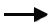
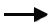

Дмитрий Ляпунов
"Mobile Developers Latvia" Meetup, Рига, 2016
transform
opacity
If pages are too big they may take an unduly long time to load. In addition, mobile devices typically have restrictions on the largest page they can accommodate.
-webkit-tap-highlight-color
<input type="email, url, password, number, date, ..."/>
min-device-pixel-ratio: 2
min-device-pixel-ratio: 1.5
overflow-scrolling: touch
sms:
scrollTo(0, 1);
minimal-ui
https://www.w3.org/standards/techs/js#stds
$> npm i -g weinre $> weinre httpPort 3333 boundHost 127.0.0.1
$> npm i -g weinre
$> weinre httpPort 3333 boundHost 127.0.0.1
Слайды презентации — leikam.github.io

 


 vs
vs